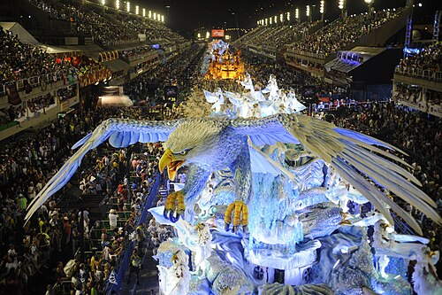
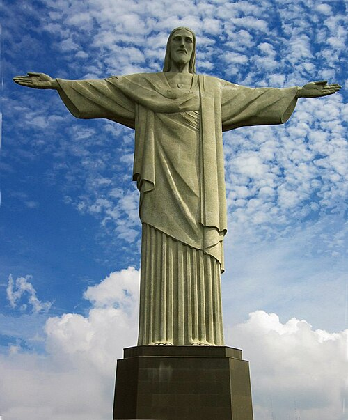
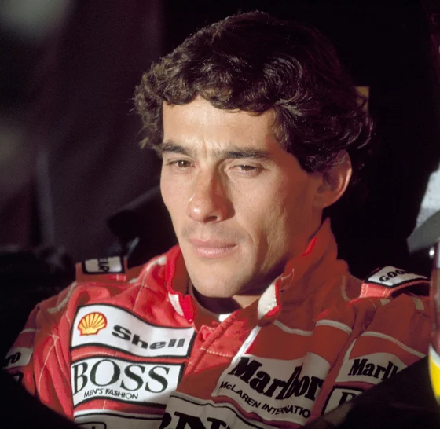

Cultura
Cultura braziliană este foarte diversificată datorită caracterului complex al societății. A fost puternic influențată de tradițiile și obiceiurile de origine europeană, africană și autohtonă. Se bazează, în special, pe un substrat al culturii portugheze, fapt datorat lungii perioade de timp în care Brazilia a fost o colonie portugheză. Printre principalele influențe se numără limba portugheză, catolicismul și stilul manuelin în arhitectură. Imigranții europeni, mai ales germanii și italienii, au contribuit și ei la diversificarea culturii țării. Influențele popoarelor autohtone se pot observa mai ales în arta culinară, dar și prin numeroasele împrumuturi lingvistice, în timp ce sclavii africani eliberați au influențat aproape toate domeniile culturale, în special muzica și dansul.
Primele opere scrise ale literaturii braziliene datează din secolul al XVI-lea. Acestea sunt scrisorile primilor exploratori portughezi care au venit în Brazilia, cum ar fi Pêro Vaz de Caminha, ce a scris în timp ce naviga cu nava lui Pedro Álvares Cabral. Bucătăria prezintă multe diversificări la nivel regional. Tocmai această diversitate se află în concordanță cu structura etnică și națională complexă a țării. Tradițiile muzicale braziliene sunt de asemenea foarte bogate. Stiluri ale muzicii populare includ, printre altele, samba, bossa nova, forró, frevo și pagode. În ce privește alte domenii, istoria cinematografiei își are originea la mijlocul secolului al XIX-lea evoluând constant până astăzi, perioadă în care a obținut și recunoașterea internațională.
Carnavalul brazilian, cu muzica vibrantă și paradele spectaculoase, a devenit unul dintre cele mai răspândite imagini asociate Braziliei, fiind simbolul tinereții, frumuseții și sexualității. Este celebrat înainte de postul mare în toate municipiile țării, însă cele mai impunătoare petreceri au loc în Rio de Janeiro, Salvador, Recife și Olinda.
Carnavalul de la Rio de Janeiro

Religie
În Brazilia coabitează un număr însemnat de religii, iar constituția statului garantează deplina libertate confesională. Biserica Romano-Catolică este dominantă, Brazilia fiind statul cu populația cea mai mare a catolicilor din lume. Deși separarea statului de biserică s-a produs târziu în comparație cu alte state, abia spre sfârșitul secolului al XIX-lea, Biserica a continuat să aibă ingerințe în afacerile statului. O particularitate a catolicismului brazilian este larga răspândire a teologiei eliberării, concretizată în luări de poziție în favoarea celor exploatați. Între reprezentanții acestui curent s-au numărat Leonardo Boff și Pedro Casaldáliga. Succesorul lui Casaldáliga, arhiepiscopul Leonardo Ulrich Steiner, a fost ridicat în anul 2022 la rangul de cardinal.
Numărul total al protestanților este în creștere. Până în 1970 majoritatea protestanților era constituită din membrii bisericilor protestante tradiționale, cum ar fi luteranii, prezbiterienii și baptiștii. De atunci, numărul penticostalilor și neopenticostalilor a crescut semnificativ. Credințele tradiționale africane și tradiția catolică au cunoscut o simbioză ce a condus la apariția unor religii afro-braziliene cum ar fi macumba, candomblé și umbanda, în timp ce amerindieni practică diverse religii ancestrale.
Conform datelor recensământului din 2000, 75% dintre brazilieni erau romano-catolici, 16% — protestanți, 1% — ortodocși și alți creștini, 1,332% — spiritiști, 0,309% — practicanți ai unor religii africane, 0,01% — practicanți ai religiilor amerindiene, iar 0,806% au declarat altă religie. De asemenea, 7,354% din brazilieni s-au declarat ca fiind agnostici, atei sau fără credință.
Cristos Mântuitorul în Rio de Janeiro, simbolul catolicismului brazilian

Mass-media
Primul post de televiziune din Brazilia a fost TV Tupi, fondat de către Assis Chateaubriand la data de 18 septembrie 1950. De atunci, numărul posturilor de televiziune a cunoscut o creștere vertiginoasă, înființându-se mari rețele, cum ar fi Rede Globo, Rede Record sau SBT. Astăzi, televiziunea reprezintă un factor important în cultura populară modernă braziliană.
Prima radioemisiune din Brazilia a fost transmisia discursului președintelui Epitácio Pessoa din data de 7 septembrie 1922, dar primul post de radio a fost înființat cu aproape o jumătate an mai târziu — „Rádio Sociedade do Rio de Janeiro” și-a început activitatea la 20 aprilie 1923. Anii '40 ai secolului al XX-lea au reprezentat epoca de aur a radiodifuziunii braziliene, radioul din acea perioadă având un impact social comparabil cu cel al televiziunii din zilele noastre. În prezent, multe din funcțiile posturilor de radio au fost preluate de televiziune. Acum, majoritatea posturilor de radio au grila de programe axată pe emisiunile muzicale și știri.
Anul 1808 este considerat anul nașterii presei din Brazilia. Înaintea sosirii familiei regale portugheze, orice activitate jurnalistică a fost interzisă de autoritățile coloniale, acest lucru reprezentând o particularitate pe continentul american, deoarece în nicio altă colonie niciodată nu s-au impus asemenea restricții. Gazeta do Rio de Janeiro a fost primul ziar publicat la scară națională și a început să circule la 10 septembrie 1808. Astăzi, presa reprezintă atât o sursă de informare zilnică, prezentând articole din diverse domenii ale vieții, cât și o sursă de informații generale, oferind cititorilor o gamă largă de reportaje ș.a.m.d din diferite domenii.
Sport
Fotbalul este sportul cel mai popular în Brazilia. Selecționata de fotbal a acestei țări ocupă în prezent locul patru în clasamentul echipelor naționale conform FIFA. Brazilia a câștigat Cupa Mondială de cinci ori (1958, 1962, 1970, 1994, 2002), deținând astfel recordul mondial, fiind țara cu cele mai multe astfel de titluri. În domeniul automobilismului, șoferii brazilieni de Formula 1 au devenit campioni mondiali de opt ori: Emerson Fittipaldi în 1972 și 1974, Nelson Piquet în 1981, 1983 și 1987, iar Ayrton Senna în 1988, 1990 și 1991. Baschetul, voleiul și artele marțiale sunt și ele discipline sportive populare. De asemenea, tenisul, handbalul, înotul și gimnastica devin din ce în ce mai practicate. Există și câteva sporturi care s-au înființat sau dezvoltat în Brazilia, cum ar fi fotbalul pe plajă, futsalul și voleiul cu piciorul — variantele fotbalului, capoeira, vale tudo și varianta braziliană de jiu-jitsu.
Ayrton Senna, pilot de curse brazilian

Pelé, fotbalist brazilian

Neymar, fotbalist brazilian
Brazilia a găzduit o varietate de evenimente sportive: țara a organizat ediția din 1950 a Cupei Mondiale la fotbal și a fost aleasă pentru a găzdui Campionatul Mondial de fotbal din 2014. Circuitul situat în São Paulo, Autódromo José Carlos Pace, găzduiește anual Marele Premiu al Braziliei în cadrul campionatului mondial de Formula 1. În São Paulo s-a organizat de asemenea și Jocurile Pan Americane din 1963, iar în Rio de Janeiro au avut loc Jocurile Pan Americane din 2007. De asemenea, Brazilia a încercat pentru a patra oară să organizeze Jocurile Olimpice de Vară la Rio de Janeiro, ultima dată participând la selecția pentru ediția din 2016, ea fiind aleasă ca organizatoare a Jocurilor Olimpice de la Rio de Janeiro din 2016.